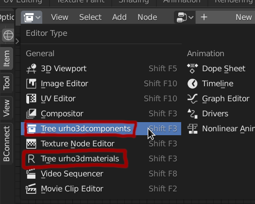
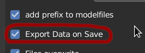
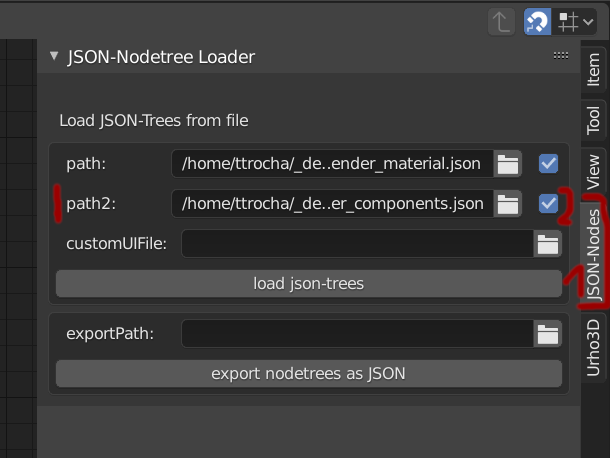
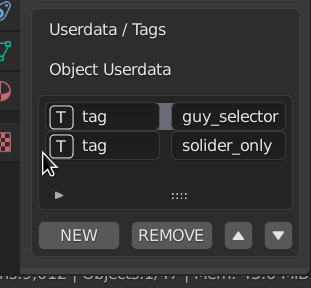

Hi there, in the showcase-section I show my little ggj2020-entry. Some might know that I’m working on an extended urho3d-blender-exporter ( I don’t dare to call it fork nowadays  ). Not really experienced with urho3d itself but I love the whole design. Especially that it is NOT editor-centric like all the other players. Nonetheless I do want to build my gameobject in blender and want a good urho3d-integration for this.
). Not really experienced with urho3d itself but I love the whole design. Especially that it is NOT editor-centric like all the other players. Nonetheless I do want to build my gameobject in blender and want a good urho3d-integration for this.
Urho’s Object/Attribute system is just a blast for this kind of work as you can just export the objects. I wrote another blender-addon with which you can create blender-nodetrees by an json-file. So the workflow is like this:
- Define from within your project what components you want to export
- you have the option e.g. to export all registered LogicComponent
- are just whiteliste all components you want to export. Like this:
The exporter-class itself consists of one cpp/h-file only with a dependency on base64 (which is actually not needed for a simple export)
In my setup everytime the game is started I export a json-file into the bin-folder with the exported components as json-data readable for my addon_jsonnodetree
The component-nodetree is one of two nodetrees being available from within blender. The exported components are managed by the game itself, the materials are managed by a special urho3d-blender-runtime that is built for communicating with blender and to render multiple views for the current blender-session and to scan the export-folder (which is your resource-path) for textures/materials/techniques/particles/animations/models and export all of this inside material-nodes for you. The material-nodetree is automatically created in your export-path’s root-folder.

So I basically took the opposite path to @1vanK very cool Material-Export-Effort and bring Urho3d itself inside of blender and show the result how it will look afterwards rendered by the urho3d-blender-runtime.
This is basically done by using urho3d’s resource-reload-function. As soon as you export the scene this state will be shown. This means atm you need to export the scene to keep it in sync. To make this easier there is a new option:

(I won’t show all new features,…this will be a post of its own once I consider the whole system usable for the broad mass )
I plan to make this syncing process automatically someday but with ‘Export on Save’ it works quite ok. But that might depend on your model. So an export can take some time and once you have a scene with multiple objects that might be taken even longer. For this I support Collection-Instances (formerly Group-Instances).
My setup was to have 2 blends. One blend with my props and one with the scene that is using mostly blender-linked collections and are therefore not exported:
prop-setup:
- The collection, a gameobject in this case ‘Guy_Soldier’, consist of multiple objects (selector, aramture, particle-emitter(as component) )
- The collections you want to export as Urho-Objects need to be marked. These marked collections will be exported as separate object named Objects/col_[NAME].xml in your export-path
- Here you see the assigned ComponentNodetree for the active-object. (You can assign multiple ComponentNodetrees to reuse them)
Scene-Setup:
The scene itself has not much own geometry. In this case only the landscape. Everything else is linked in blender. You can just use “File->Link->Props.blend->Collections->Cart” to link the cart collection which will from then on be available for adding “shift-a -> collection-instances” (1). To export this is ultrafast because it creates basically only a scene-file.
At 2) you see the cart-instance and in the outline 3) you see it is linked. In the scene it creates a “GroupInstance”-Component which will load the collection when the scene is instantiated.
Back to the nodetrees:
Creating materials:
On the top left-viewport you see it is in rendered mode. Blender tells the urho3d-blender-runtime its viewport-data, urho3d creates a rendertexture and sends it via net ( sry, I’m using pyzmq in blender, which you need to install(super easy) ) back to blender which will draw it on the viewport. Selecting the object and seeing e.g. in Edit-Mode the mesh works. That was actually very hard to get right, especially as I’m not a math-genius and all those matrices or finding the right one or who to get what where was really painful and I almost gave up.
Aditionally to the renderered model itself you can also add urho3d-gizmos to the scene. In this case the sphere is the collision-shape of its rigidbody. You can toggle phyiscs-visuals at 4).
At 3) you see the actual nodetree. In this case very simple. I almost just used vertex color in this project. But you can also assign textures, normalmaps, and can choose all available techniques. You also have texture-preview and they get automatically updated once you put them in the resource-path
Component-Nodetrees:
To use component-trees you need to select the exported json manually. For this go to one node-editor. e.g. materials or Blender-Compositing-View and select ‘JSON-Nodetree’ on the sidebar and set it in path2. (Path1 is reserved for the materialtree. The checkbox indicates autploading when the file is modified…)

In this case the cart-logic:
- Give the componentTree a name
- You see a custom component which is just available as you would expect.
- Assign the nodetree to the current object
In the export process each nodetree’s component is added to its specific node.
Also very use full is the support for tags and userdata (object-panel):

To have a good starting point I created a very simplistic minimal-application, which I also used for the GlobalGameJam-Project.
The features:
-
BlenderComponent-Exporter
-
Console/Profiler-Integration
-
Lua-Integration
-
Pause-Game (F1)
-
Write Scene (F11)
-
‘one-click’-compile: tools/build_all.sh (sry only for linux)
- this will compile: native,mingw,web,android,rpi,arm64 out of the box.
- there is no need to compile urho3d for each of those. I created docker-images that already include the library based on @weitjong wonderful dockerimages (The corresponding dockerfiles can be found in ‘tools/Dockerimages’ ).
-
‘one-click’-packager: tools/export_game.sh [gamename]
- this will create for arm,web,mingw,native zip-folder in the export-folder
- optionally you can add files/directories into ‘package_include’-folder. those files will be placed along the exe into the zip
- for android release to be signed you can set env-variable ‘URHO3D_ANDROID_KEYSTORE’ to point to your keystore-file. Additionally jarsigner and zipalign needs to be in PATH. (There is a dedicated script that you can use just for signing, that is called by export-game: tools/sign_apk.sh).
- if you don’t want/need to sign the apk, you find the apk in build/android/apk/debug
-
Integrated Editor(F12) to toggle from game to editor and back and to be used as ingame-‘debugger’ to see what’s going on. Of course you can still use all functionalities…so if you want to give the blend-export some extra you can do this there.
-
All(?) of those options can be turned off in cmake (at the moment not done automatically in build)
Ok, people. That was a lot. I keep you posted. Whoever wants to give it a try. All of this is already available for download. Here is a pack with all blender-addons you need including the runtimes compiled for Linux and Windows: https://github.com/dertom95/Urho3D-Blender/releases/tag/0.1.2
I will keep on working on this workflow and will keep you posted as soon as it there is something to be mentioned.
Greetz, Tom
PS. I didn’t plan to write so much and I will reread it later! So forgive me the typos.